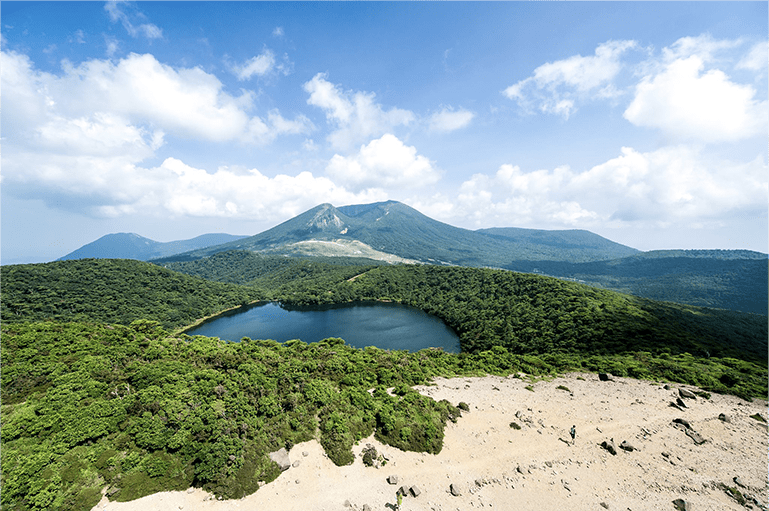
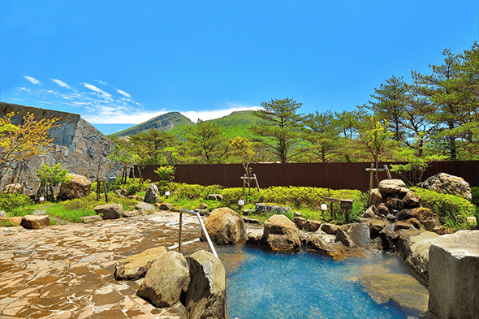
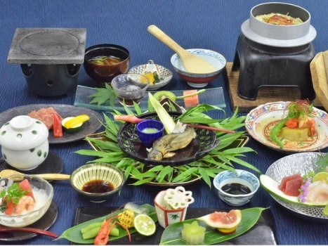

～ペットとも泊まれる、九州で最も標高が高い温泉郷～
ホテル ピコ ラナイ えびの高原 (宮崎)
霧島連山の最高峰、韓国岳の裾野に広がる標高約1,200mのえびの高原。
こちらの宿は炭酸水素泉かけ流しで、雄大な韓国岳を眺めながら入浴ができる。
そしてペットを飼っている方に朗報だ。
この宿ではペット専用ルームがあり、愛犬や愛猫と一緒に泊まることができる。
「旅行でペットをどこに預けようか？」なんて考えなくてもよい。
もちろんペットを飼っていない方にもおすすめできる点はたくさんある。
グランピングがそのまま室内にやってきたようなグランピングルームや、
夕飯の代わりにBBQをできるオプションなど、他とは一線を画したサービスが豊富。
1人で泊まれる部屋は限られているが、
料理の素晴らしさや青白い温泉など、とにかく楽しめるものがたくさん。
ゆったりまったり、でも色湯や景色の良さは外せない。そんな人に。